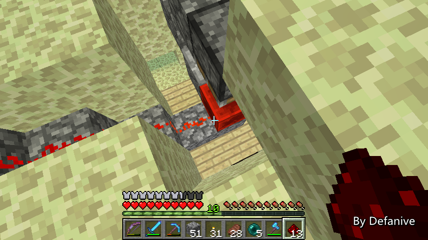
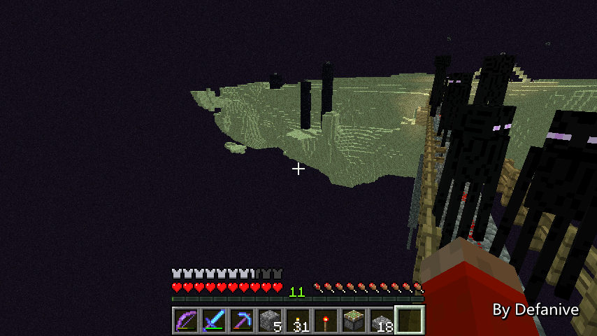

首页
上一页
264
265
266
267
268
269
269
270
271
272
273
274
下一页
末页
defanive2
无尽黑夜
14
好吧今天就玩到这里了！
有点晚了，准备睡觉
——来自 MCLive
21637楼
2013-08-21 16:51
defanive2
无尽黑夜
14
最近刚进到大学有一大堆开学事宜，都比较忙
可能大家假期最后几天不能看到直播了
不过在忙完之后仍然会继续的，暂不弃坑！
PS 有作业的同学加油做吧，到最后一天再熬夜做不是一个好想法
21785楼
2013-08-27 12:39
defanive2
无尽黑夜
14
好久没直播了，今天来打会MC吧！
LOL！
——来自 MCLive
21991楼
2013-09-04 09:02
defanive2
无尽黑夜
14
今天有什么任务呢，我们来进行END改造计划吧！
但是END改造为什么要活塞呢。。？
——来自 MCLive
21994楼
2013-09-04 09:09
defanive2
无尽黑夜
14
为什么这个计划拖这么久呢
因为自从1.5还是1.6的某次更新之后
带有装备的怪物不再算入刷怪上限中
于是之前的怪物站防刷怪都不再有效了
最近一直都在想解决办法
——来自 MCLive
21995楼
2013-09-04 09:16
defanive2
无尽黑夜
14
之前panda4994也做过一种END的和平模式
原理也就是之前在讲chunk加载时候所说的
当chunk被inactive加载之后
里面的怪物会被算入刷怪上限
但是由于不是active加载，里面的怪物不会despawn
达到了禁止刷怪的目的
——来自 MCLive
21996楼
2013-09-04 09:25
defanive2
无尽黑夜
14
但是毕竟panda的也是一个开关
也就是说进入END之后要手动拉拉杆才能停止刷怪
而刷怪在1秒钟内就能完成80只上限
因此要想办法做到在进入END之后就立即激活chunk
也就是说要做到自动检测玩家有没有进入END
——来自 MCLive
21997楼
2013-09-04 09:36
defanive2
无尽黑夜
14
不光是要检测玩家进入END
而且要尽可能快的检测到
这样才能尽快inactive加载chunk，限制刷怪
因此目标就是做一个进入END立即产生信号的装置
——来自 MCLive
21998楼
2013-09-04 09:44
defanive2
无尽黑夜
14
进入END之后5x5x4范围内的方块都会被刷新
里面的方块都会被直接干掉，并且刷新黑曜石平台
而刷新这个区域是在进入END时瞬间进行的
如果可以有效利用的话，就可以做出检测方法
——来自 MCLive
21999楼
2013-09-04 09:46
defanive2
无尽黑夜
14
在创造实验了不少时间之后想好了一种设计
为了配合这种设计，准备把整个END基地的样貌进行大改
——来自 MCLive
22000楼
2013-09-04 09:50
defanive2
无尽黑夜
14
不知道大家对我家里的喷泉是什么感觉
个人觉得是挺舒心的
END基地也打算做一个喷泉
除了美观作用之外，可以看到喷泉的前水流是在5x5x4范围内的
也就是说每次进入END之后，这部分水流都会被切断
从而产生一个方块更新，进而可以被BUD检测到
也就起到了检测玩家进入END的作用
——来自 MCLive
22003楼
2013-09-04 09:54
defanive2
无尽黑夜
14
修改之后大概是这个样子
看起来还算不错
不过喷泉有点突兀，以后再修改一下美观
——来自 MCLive
22004楼
2013-09-04 09:58
defanive2
无尽黑夜
14
这里就是放BUD的地方了
只需要在此建一个天花板的BUD即可
——来自 MCLive
22005楼
2013-09-04 10:00
defanive2
无尽黑夜
14
造一个与甘蔗场总BUD一样的BUD即可
——来自 MCLive
22006楼
2013-09-04 10:03
defanive2
无尽黑夜
14
现在BUD设置在这里
这样每次进入END时水流被清除，激活BUD
BUD的信号就进行inactive加载包含80只小黑的chunk
这样就可以做到不刷小黑了
——来自 MCLive
22007楼
2013-09-04 10:05
defanive2
无尽黑夜
14
接下来BUD的信号会穿越一个长距离
inactive激活距离玩家9个chunk以外的一个chunk
这个chunk里会包含80只小黑
——来自 MCLive
22008楼
2013-09-04 10:16
defanive2
无尽黑夜
14
由于BUD接受到信号时会无延迟ON->OFF
因此接下来信号只需要经过一系列ON->OFF无延迟中继器即可
——来自 MCLive

22009楼
2013-09-04 10:18
defanive2
无尽黑夜
14
为了方便铺设，电路会铺在旧的去小黑塔的路上
不过先要把路上的半砖全部换成鹅卵石
接下来先下去在铁路上把这些半砖都拆了并重新铺上鹅卵石
PS 之所以不直接再铺一层半砖
原因是一会会使用半砖封好电路防止刷怪
所以回收这里的半砖留着给以后用
——来自 MCLive
22010楼
2013-09-04 10:20
defanive2
无尽黑夜
14
准备开工的时候发现忘记带木材了。。
没办法做红石火把，给跪
——来自 MCLive
22011楼
2013-09-04 10:24
defanive2
无尽黑夜
14
回家一次取了一点木材
最后还是决定把鹅卵石造成半砖
——来自 MCLive
22013楼
2013-09-04 10:29
defanive2
无尽黑夜
14
然后接着造ON->OFF无延迟中继器即可
一直把电路往外延伸
——来自 MCLive
22015楼
2013-09-04 10:33
defanive2
无尽黑夜
14
其实有轨道的话铺起来还是挺快的
——来自 MCLive
22016楼
2013-09-04 10:35
defanive2
无尽黑夜
14
往回走的时候发现可能会给跪。。
——来自 MCLive
22017楼
2013-09-04 10:38
defanive2
无尽黑夜
14
事实证明要这样走过去难度的确有点高
身上还有不少好东西，希望不跪
——来自 MCLive
22018楼
2013-09-04 10:39
defanive2
无尽黑夜
14
我擦。。
站在栏杆边上shift慢慢走。。
——来自 MCLive

22019楼
2013-09-04 10:40
defanive2
无尽黑夜
14
安全回到，我去 = =
早知道就带上南瓜头了
——来自 MCLive
22020楼
2013-09-04 10:41
defanive2
无尽黑夜
14
主要是没料到身上红石会不够用
不然就不需要再往返一次了
——来自 MCLive
22021楼
2013-09-04 10:42
defanive2
无尽黑夜
14
接下来给红石线路都盖上半砖即可
防止在线路上刷怪
——来自 MCLive
22023楼
2013-09-04 10:43
defanive2
无尽黑夜
14
到小黑塔的线路已经铺完了
耗资还算可以接受
——来自 MCLive
22025楼
2013-09-04 10:48
defanive2
无尽黑夜
14
接下来要把线路一直往左或者往右延伸到距离小黑塔9个chunk以外
在目的地做一个聚集有80只小黑的chunk
PS 为什么要把线路先连接到小黑塔再到80只小黑的chunk呢
是有原因的，大家来猜猜
——来自 MCLive
22026楼
2013-09-04 10:55
首页
上一页
264
265
266
267
268
269
269
270
271
272
273
274
下一页
末页